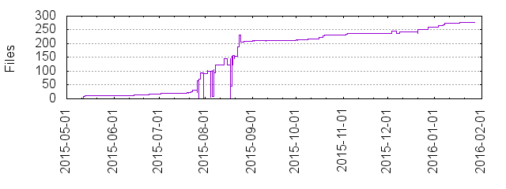

Files
- Total files
- 276
- Total lines
- 34911
- Average file size
- 387419.21 bytes

| Extension | Files (%) | Lines (%) | Lines/file |
|---|
| 74 (26.81%) | 3122 (8.94%) | 42 |
| cfg | 9 (3.26%) | 767 (2.20%) | 85 |
| conf | 11 (3.99%) | 1242 (3.56%) | 112 |
| config | 8 (2.90%) | 103 (0.30%) | 12 |
| dev | 1 (0.36%) | 12 (0.03%) | 12 |
| go | 17 (6.16%) | 1757 (5.03%) | 103 |
| html | 2 (0.72%) | 2 (0.01%) | 1 |
| jar | 1 (0.36%) | 4445 (12.73%) | 4445 |
| keys | 1 (0.36%) | 29 (0.08%) | 29 |
| md | 15 (5.43%) | 350 (1.00%) | 23 |
| pem | 6 (2.17%) | 149 (0.43%) | 24 |
| png | 1 (0.36%) | 604 (1.73%) | 604 |
| puml | 1 (0.36%) | 117 (0.34%) | 117 |
| py | 11 (3.99%) | 839 (2.40%) | 76 |
| rst | 1 (0.36%) | 0 (0.00%) | 0 |
| service | 39 (14.13%) | 759 (2.17%) | 19 |
| sh | 35 (12.68%) | 784 (2.25%) | 22 |
| sql | 3 (1.09%) | 21473 (61.51%) | 7157 |
| tac | 10 (3.62%) | 410 (1.17%) | 41 |
| toml | 12 (4.35%) | 66 (0.19%) | 5 |
| txt | 1 (0.36%) | 15 (0.04%) | 15 |
| war | 1 (0.36%) | 393344 (1126.71%) | 393344 |
| yaml | 12 (4.35%) | 2725 (7.81%) | 227 |
| yml | 4 (1.45%) | 138 (0.40%) | 34 |